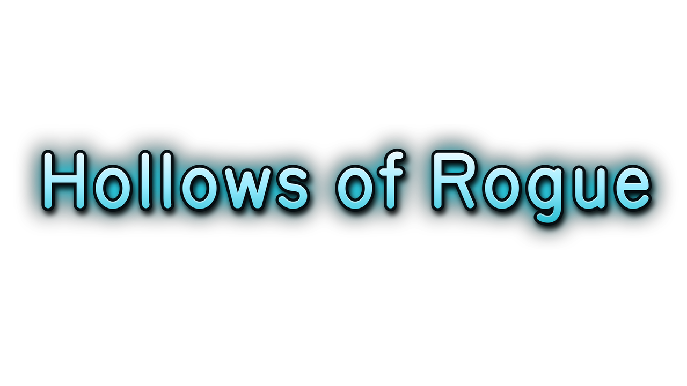
A modernized traditional roguelike. Descend a persistent, turn-based dungeon inspired by the original Rogue, read every roll in the combat log, talk yourself through close calls – and try to escape with the Amulet of Yendor.
Descend into a deadly dungeon, fight monsters, find loot and bring back the Amulet of Yendor. A take on the 1980 classic that gave the roguelike genre its name: turn-based, permadeath, and a persistent dungeon that gets stranger the deeper you go. Play with graphical tiles, classic ASCII or a high-contrast display.
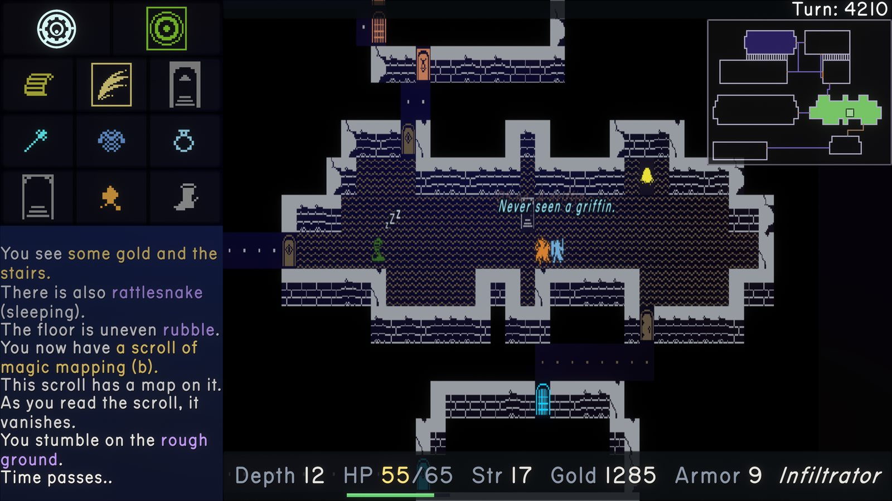
On a touchscreen, swipe to move, pinch to zoom and drag to pan, or use a virtual D-pad. Portrait and landscape are both supported. On desktop, the keyboard is fully rebindable; gamepad and Steam Deck support is in alpha. Quick-action buttons cover common commands, including walking to the exit.
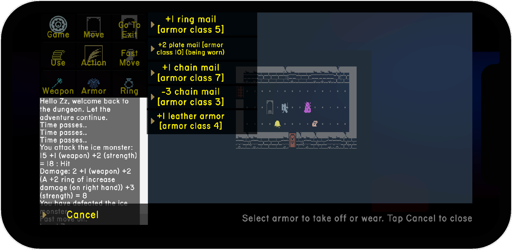
The original game is famously unforgiving. Switch off selected legacy rules for a friendlier run, or keep them all if you like it rough. There are also seeded runs, undo, and an optional hunger clock for purists.
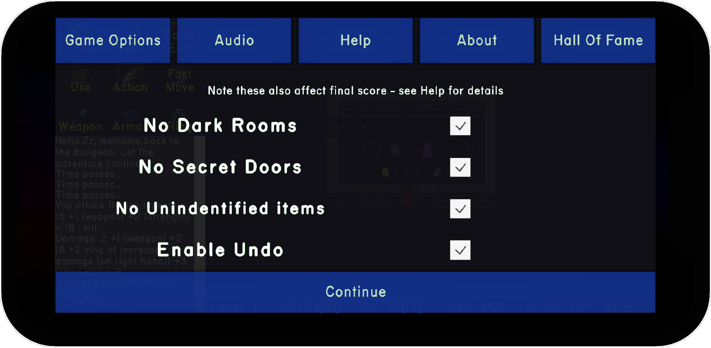
Monsters, items and walls have small animations now, sleeping monsters snore, and hits show damage numbers. Very little stands perfectly still anymore.
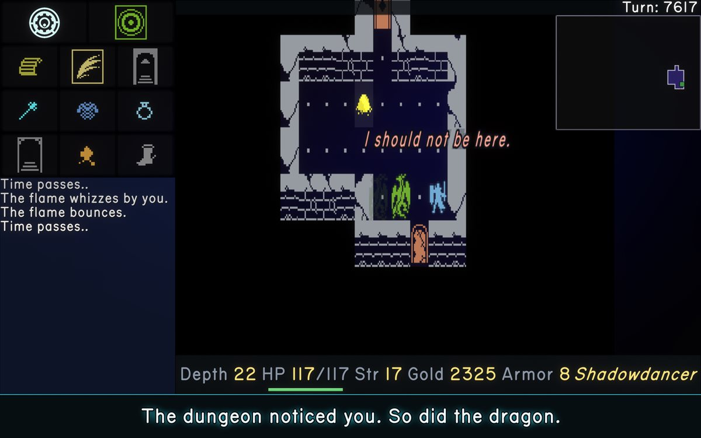
The explored part of the level stays in view in the corner. Your hero also comments on what he runs into – new monsters, good finds, close calls.
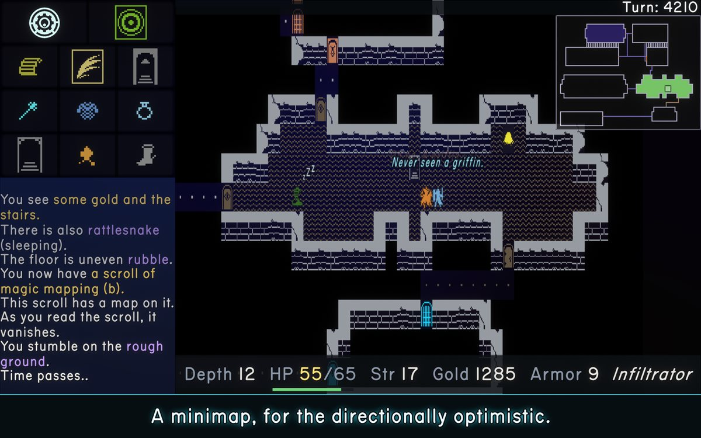
Each run tracks depth, kills, gold and turns, alongside your best results and lifetime stats. New records get pointed out, even on the tombstone.
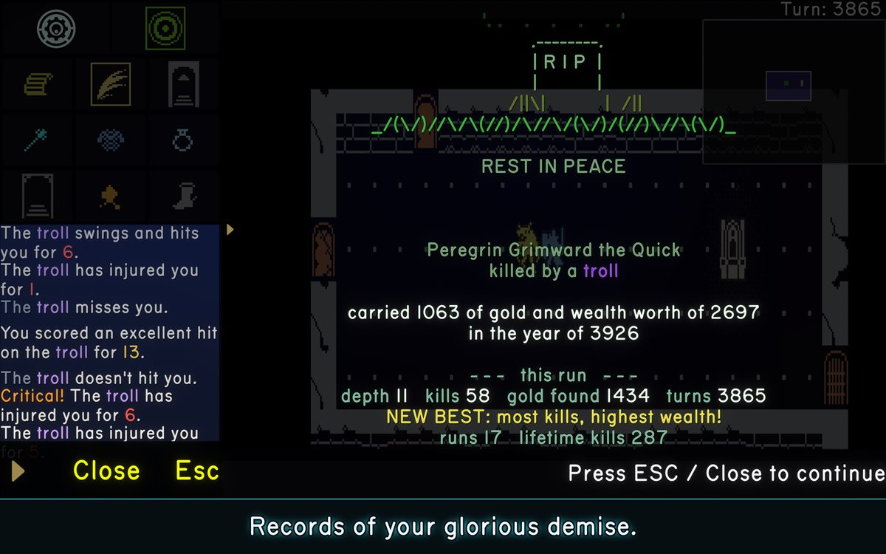
Also: faster movement, an optional detailed combat log, dungeon generator improvements and plenty of fixes.
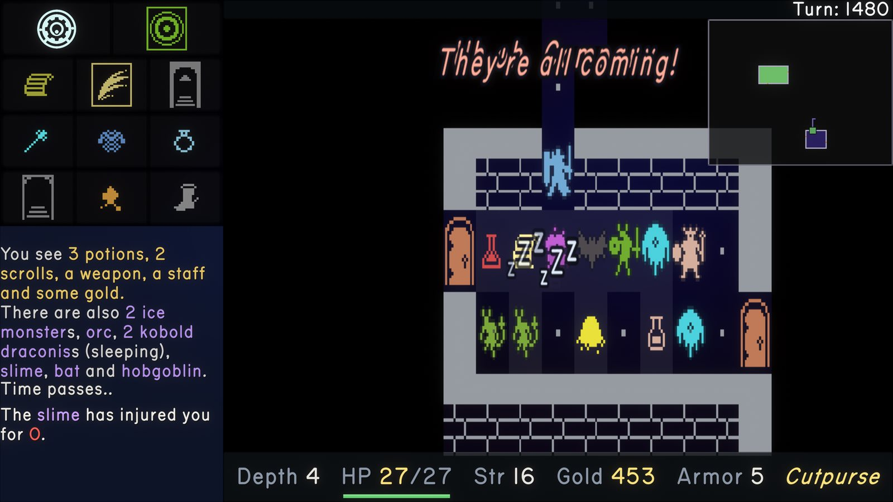
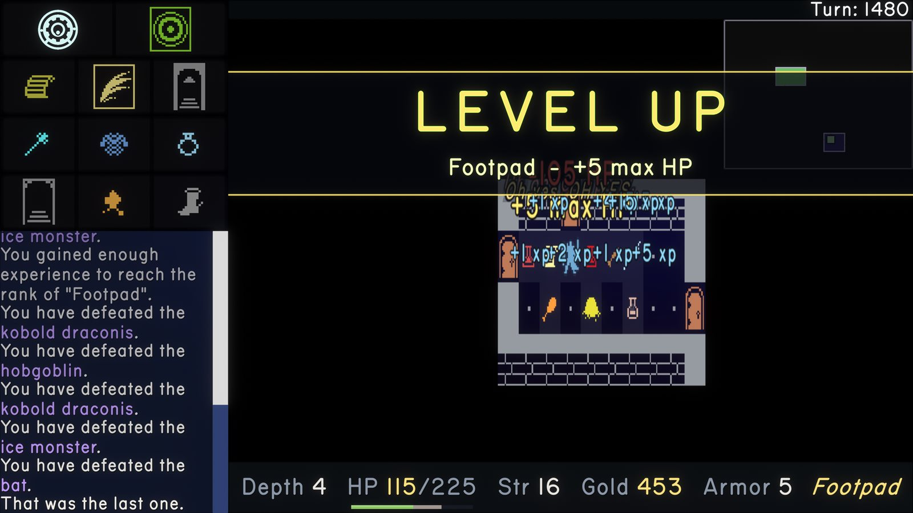
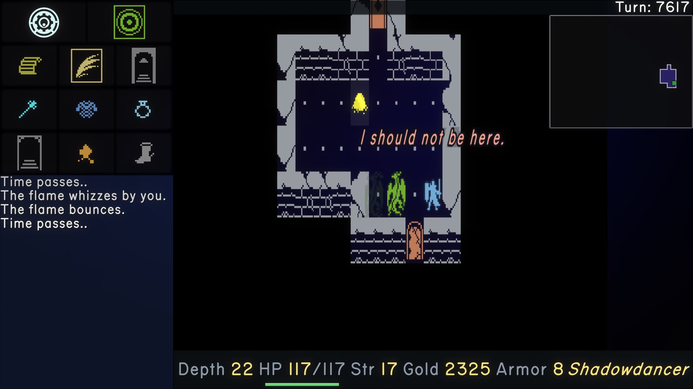
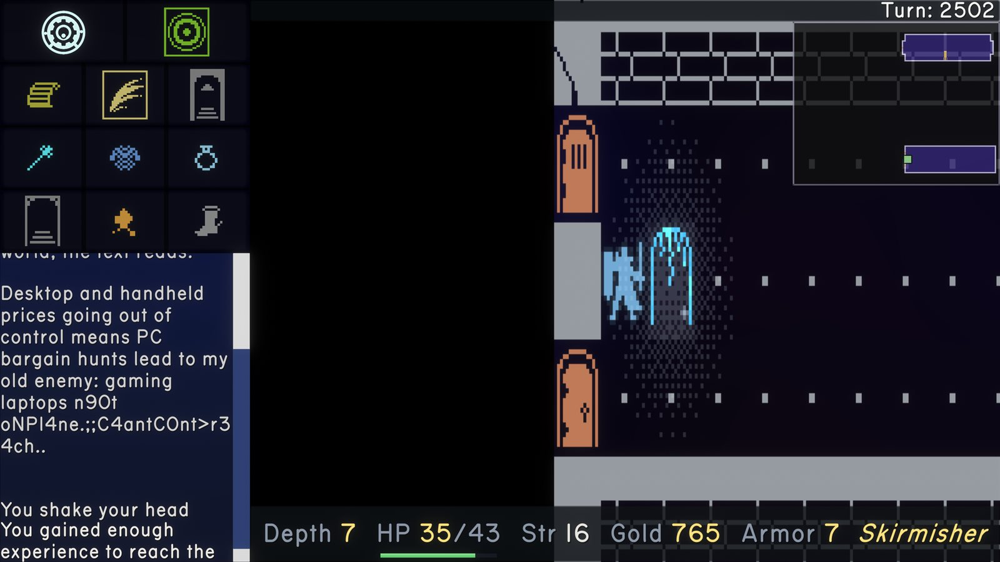
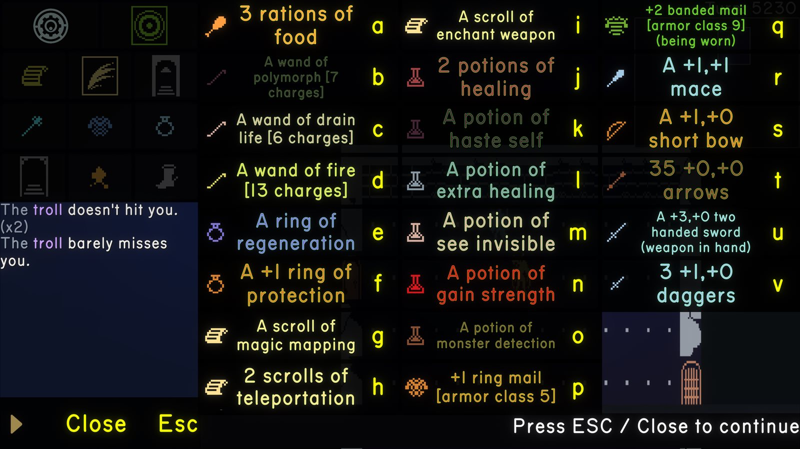
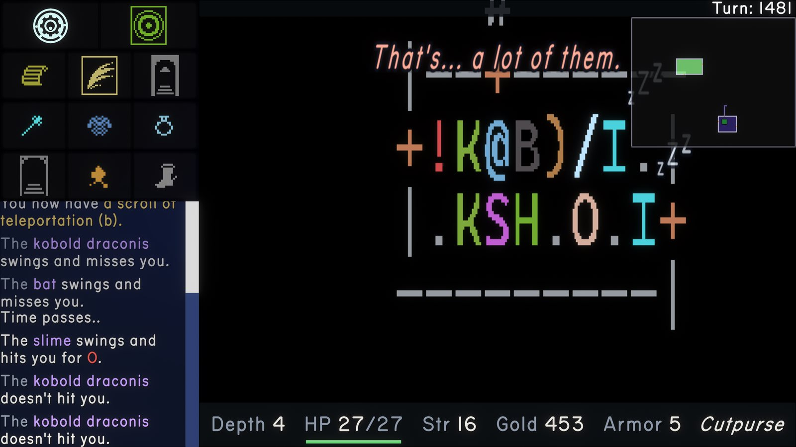
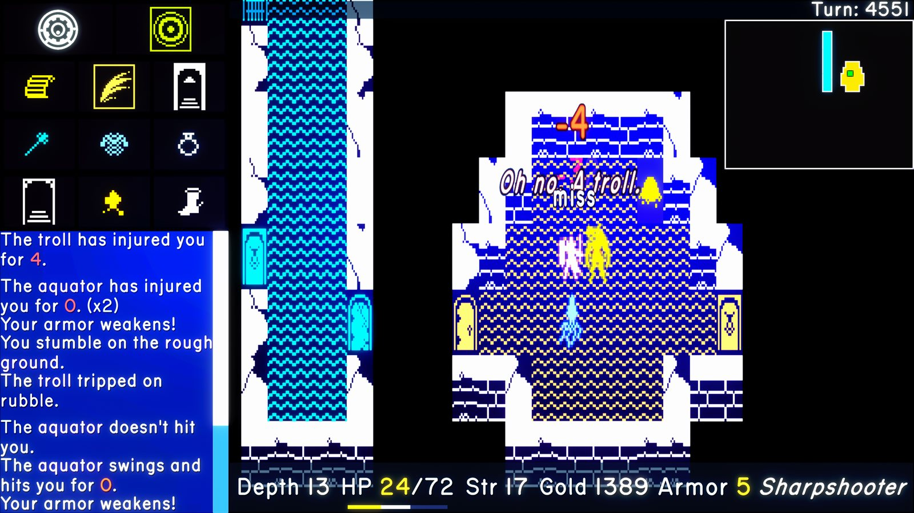
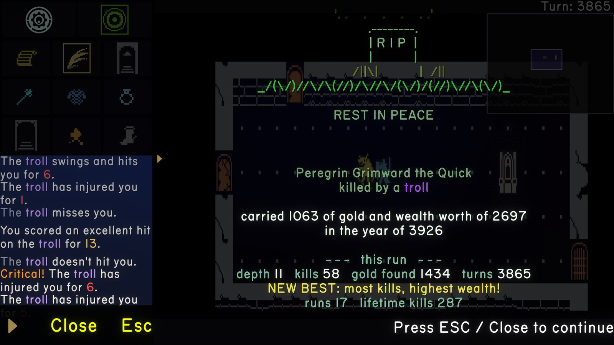
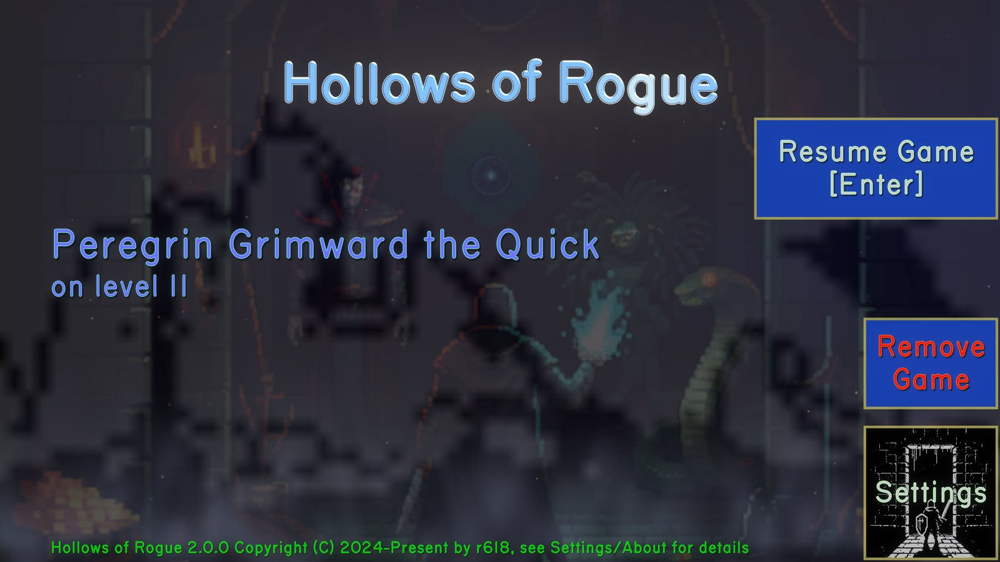
Tiles by Oryx.
For questions or support, use the Roguelikes Discord (username: r618), X, Bluesky, Threads, or Steam.